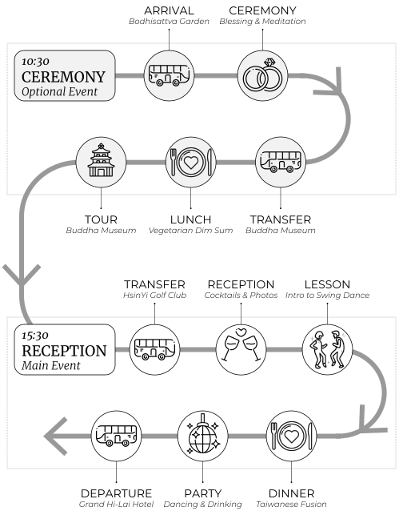
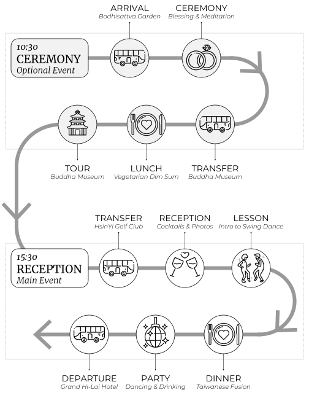

我們的故事
始於2018年，德國的斯圖加特
Tifffany是一名建築設計師，Steve是一名機器人工程師。兩人都是對技術與自然界的交界感興趣的研究人員。Tiffany使用機器人手臂開發受植物啟發的建築組件，而Steve則使用有腿機器人來研究動物如何移動，於是他們決定結婚。
Steve跟Tiffany初次見面在一間瑞士仔當地小有名氣，很舒適的咖啡吧叫Herbert'z Espresso Bar，這裡是他們喝「Milchkaffee」和「Laugencroissant belegt」消磨時間以及與經常和朋友（各自友人Matt跟Michelle就住在對街）見面得出沒場所。
經過叫喚了機器人、植物、動物、跨境生活的故事之後，Tiffany告別後匆匆離去（無疑是要處理一些緊迫的工作），Steve漫步穿過城鎮回到他的公寓，走進客廳，他倒在沙發上，凝視著天花板，向室友Friedrich宣布“我戀愛了！”
在接下來的幾週裡，他不間斷提供鬆餅、玩桌遊、還去了幾場脫口秀（而且是德文的，對新到達的外國人來說相當難理解）後，最終迎來了第一次正式的約會：一同散步穿過山坡上的葡萄園到一個小森林花園觀看幾乎顯為人知的俄羅斯吉他手Alexandr Misko的“隨你支付”演奏會。
Fun facts
透過這個小測驗認識Tiffany和Steve各自的故鄉，台灣和瑞士的的動植物！猜猜這些植物和動物來自哪裡hover for the answer.
-

Ursus thibetanus formosanus
台灣黑熊，台灣特有的動物。胸部有獨特的白色標記，形狀像新月。棲息在台灣中部和雪山山脈。 -
Capra ibex
阿爾卑斯野山羊是一種野山羊，於19世紀在瑞士被獵殺並滅絕。1906年，三隻野山羊被走私到瑞士阿爾卑斯山，並成功地重新列入其歷史範圍。 -

Ananas comosus
台灣種植的鳳梨品種超過90個，數量是世界第一。這些「自由鳳梨」因質地細膩、香氣撲鼻、風味獨特而被選擇性種植。 -

Leontopodium nivale
雪絨花產於偏遠山區，屬於雛菊或向日葵科。這種植物是瑞士登山運動的象徵，它長滿了絨毛，可以保護它免受寒冷、乾旱和紫外線輻射的影響。 -

Bos taurus
布勞恩牛是一種家牛，原產於瑞士，分佈於整個阿爾卑斯山地區。最初是一種具有三重用途的動物：產奶、肉類和役用。 -

Deinagkistrodon acutus
百步蛇是一種帶有黑色三角形標誌的毒蛇，受到台灣原住民的尊崇。它的名字指的是這樣一種信念，即受害者被咬後只能走100步就會死亡。 -

Lilium formosanum
台灣百合，也稱為鐵炮百合是台灣特有的植物，花期為六月至十二月。1990年野百合學生運動採用這種花，象徵台灣堅韌、自由和向民主過渡。 -
Pinus cembra
瑞士石松，生長在阿爾卑斯山和喀爾巴阡山脈。它的球果可用於調味“Zirbenschnaps” 或收穫松果。松果也是Tiffany作品的靈感來源。
 
